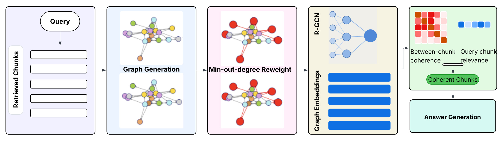
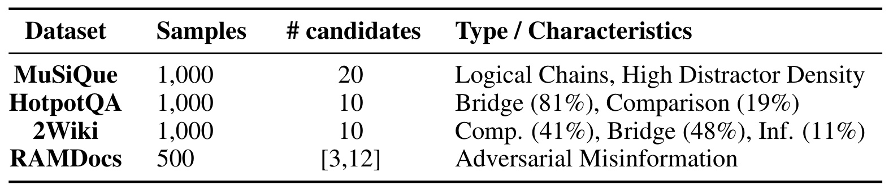
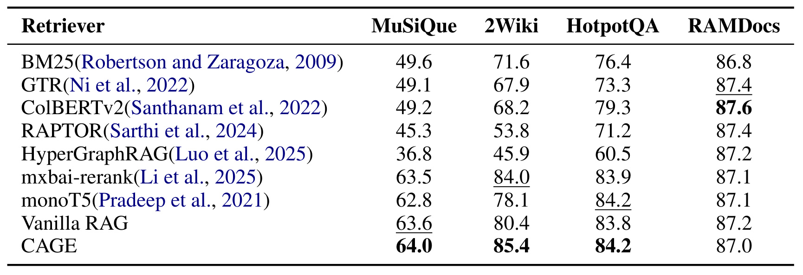
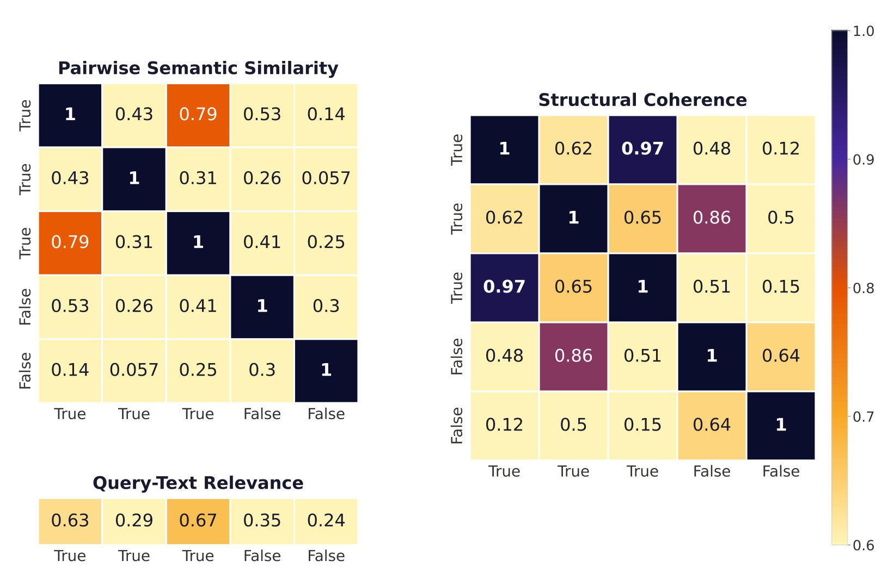
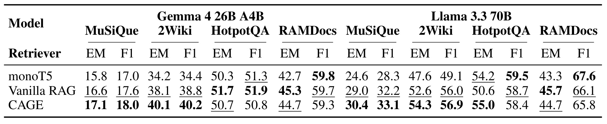
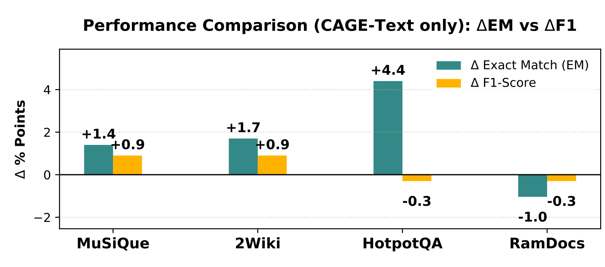
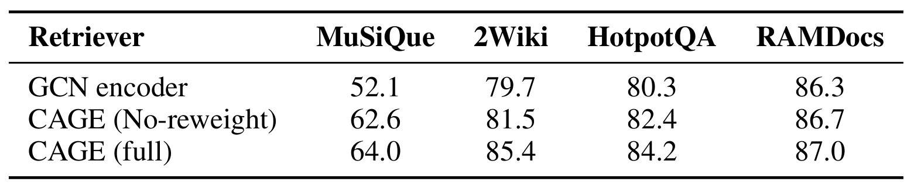
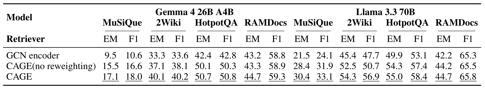
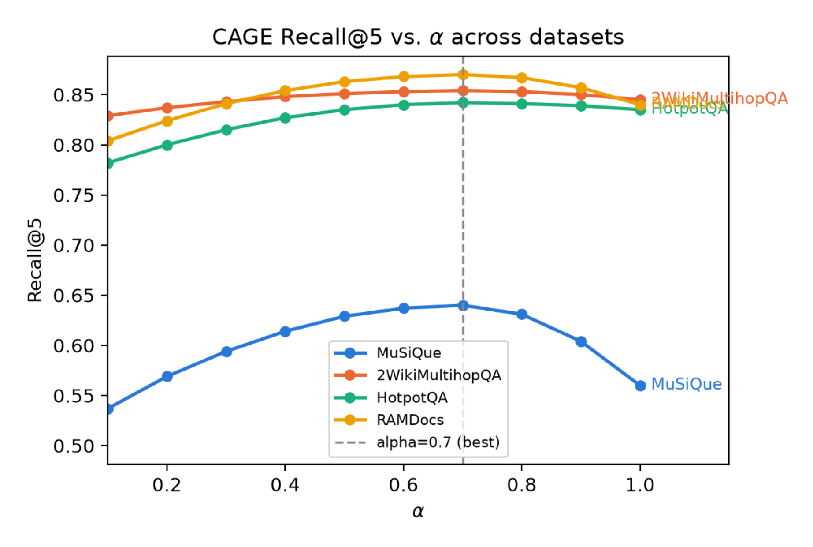

CAGE：面向检索增强生成的片段间一致性图编码
论文： CAGE: Coherence-Aware Graph Encoding for Retrieval-Augmented Generation
作者： Tong Qi、Jingyu Wu、Youbing Yin、Spencer Hong、Daben Liu、Erin Babinsky
机构： 第一作者及主要作者来自 Capital One；Spencer Hong 的署名邮箱属于 General Intelligence Company。
来源与时间： arXiv:2609.04647，v1 于 2026-09-04 02:27:34 UTC 提交；精读日期 2026-09-09，Asia/Shanghai。
论文入口： arXiv 摘要页
代码/项目： 已检查摘要页与 PDF 链接，本轮未核验到本文独立公开代码/项目页。
方向： LLM、RAG、图重排、多跳证据；下述事实来自论文主文与附录，解释和复现判断另行标明。
CAGE 由 Capital One 作者为主提出，研究检索候选进入生成器之前，如何利用片段之间的实体关系调整排序。它用独立片段图的结构表示补充文本相关性，重点检验桥接问答是否受益。下文结合方法和负向实验，区分结构联系、证据完整与事实正确三个层面。
传统 RAG 按每个片段与查询的相关性独立打分，拼出的上下文可能单篇都相关，作为一个整体却不连贯。
1. 背景和问题
一个问答系统检索到若干篇包含相同关键词的文章，并不意味着这些文章能够共同支撑一个答案。片段可能谈论同名的不同对象，可能遗漏把问题实体连接到答案实体的中间事实，也可能在日期、地点或因果关系上相互冲突。只把每个片段的相关性分数排好，再按照上下文窗口截断，无法显式判断整组材料的证据结构。
这里需要区分三件常被混用的事情。查询相关性描述一段话是否涉及用户的问题；检索集合完整性描述必要的支持事实是否都在上下文里；生成忠实性描述模型的答案是否有上下文依据。第三项成立并不推出答案真实，因为模型可以忠实复述错误材料。第一项成立也不推出第二项，例如问题问某个故事里的侦探是谁创造的，直接相关的片段只介绍故事，真正给出侦探创作者的另一个片段却没有故事名称。它的查询相似度偏低，却是答案链条不可缺少的一环。CAGE 将注意力放在生成之前，尝试修正这种由逐片段打分造成的组合缺口。
论文相关工作部分先回到传统文本连贯性任务：在同一篇文章中，句子排序、实体在相邻句子间的转移和局部关系图可以帮助判断论述是否连贯。这些任务隐含了一个条件，即材料通常来自连续写作过程，作者有相对统一的叙述计划。检索得到的片段则来自不同来源，写作时间、指代方式和问题关注点都可能不同，不能指望把它们拼接后自然继承单篇文档的连贯性。用户只问其中一个特定关系，候选片段却各自包含大量附带事实；评估对象因而从段落内部的语言组织，转变为围绕查询组合起来的证据集合。这个变化解释了为什么改善句子流畅度或者增加文本相似度，并不直接解决本文要研究的检索问题。
原文还区分了两个看似能补救的后续环节。更强的查询与片段交互模型可以改善单篇相关性，但若其打分输入只包含查询和这一篇，就无法直接知道另一个候选是否提供桥接事实。生成后的忠实性检查则观察答案相对已有上下文的依据，它难以挽回在截断时已被排除的必要材料。主张级自然语言推断可以判别两条断言是否冲突，却不天然回答材料集合是否覆盖了从问题到答案的全部中间关系。因此，作者选择在相关性重排与答案生成之间引入候选互相影响的信号，期望同时保留实体参照与关系连接。这些路线并非互斥：特别是在目标事实被替换的攻击样本中，本文自己的失败分析恰好说明主张级检查仍有不可替代的作用。
论文把片段间一致性分成四个概念。域内相关性要求材料指向同一个现实对象，而非只共享领域词汇；同一家连锁品牌在两条街上的门店不应因品牌相同被当作同一个参照物。抗噪声能力要求排除跨领域的关键词巧合，例如食品名称和使用该名称的经济指数。信息连接性要求不同片段间存在桥接实体，让问题实体能够经由中间事实抵达答案。事实一致性则要求各片段断言可以同时成立，不能让相同大学的两段描述给出互斥地点。这种拆分有助于设计错误诊断，但概念划分本身并不是四项能力已经被模型独立学会的证据。
四个维度既没有各自的监督标签，也没有四个独立损失。论文承认现有基准缺少逐维度标注，因此把多跳问答的金标准支持链当作代理证据。作者认为完整支持链通常同时具有实体对应、关系连通和逻辑相容等性质，干扰段落则破坏这些性质之一。这个代理具有实用价值，但也会把多个因素混在一起：检索到正确片段后，答案变好可能源于桥接事实补齐，不能自动归因为矛盾识别能力增强；某个数据集包含对抗错误信息，也不意味着其每个样本都是纯粹的事实一致性测试。
CAGE 与全库知识图谱检索的区别在于作用位置。GraphRAG 一类系统主要利用图结构组织或导航知识，本文则在已有候选之后，为每个片段独立建图，再比较片段图的向量相似度。它没有创建连接所有文档的大图，也没有在推理时沿一条显式跨文档边找答案。作者所谓桥接，是同一个实体分别出现在两张图中，其各自局部关系影响两张图的表示，最终体现在跨图相似度里。理解这个边界很重要，否则容易把它想成能给出可审计多跳路径的图搜索引擎，而论文实现只是基于结构特征的重排器。
从推荐与搜索工程看，问题也具有可迁移性。一个列表中的项目各自相关，不代表合起来满足用户的一组约束；商品比较问答需要多段互补规格，广告解释需要一致的产品实体与可支持的卖点，检索增强客服需要同一版本的政策。片段间信号值得进入重排，但推荐列表通常还需要多样性，不能直接把“彼此相似”作为统一好目标。本文训练中还特意使用降低图向量平均相似度的多样性目标，这与最终按相似度聚合选片段之间形成一处值得审视的张力。
因此，本文真正值得跟进的问题是：在一个固定的小候选池里，结构编码能否保留普通语义表示遗漏的实体关系，使桥接片段获得更高分，并改善最终答案？实验提供了有限但明确的正向证据，特别是 2WikiMultihopQA 的检索收益和 Llama 在 HotpotQA 的答案收益；同时也给出 RAMDocs 的负向结果。这使它更适合被读成一种有明确适用条件的结构重排尝试，而非普遍保证上下文真实、完整、无矛盾的验证器。
还应注意，一组材料内部一致，与它们共同指向客观真实，是两种不同目标。多篇互相转载的错误消息可以高度一致，少数更新后的正确文档却可能与旧材料冲突。前者需要来源独立性，后者需要时间版本信息；本文的结构聚合并未显式表示这些变量。这是企业知识库采用类似信号之前必须先明确的任务边界。
2. 方法
2.1 实体增强图构建
输入是初始检索器给出的片段集合。基线使用 all-MiniLM-L6-v2 编码查询与片段，按余弦相似度排序。CAGE 对每个片段调用 spaCy 的 en_core_web_lg 依存分析，并结合共指消解，把代词归并到其指代对象，内容词进行词形还原。论文将单篇片段表示为有向异构图：
符号解释：其中，$G_i$ 是第 $i$ 个片段的图，$V_i$ 是词或实体节点集合，$E_i$ 是有向边，$R_i$ 是边的关系类型集合。节点不只包括命名实体，也包含保留的内容词。关系来自语言分析，包括以支配动词词元标注的主宾关系及其否定形式、形容词和复合词修饰、同位关系、数值或数量关系、介词中的空间和时间关系，以及句内命名实体共现。这里的方向、类型和否定信息，比把所有共现词直接连成无类型图保留了更多语义区分。
每个节点的输入特征由一个经过 L2 归一化的 300 维词向量、词性独热向量、实体类型独热向量和标量权重拼接。原文称其为上下文表示，附录也使用 GloVe 相似性来解释特征；没有公开实现时，不宜把它扩大描述为另一个专门训练的上下文语言模型。输出仍是每篇独立图。没有跨文档边，也没有由金标准答案向图中额外注入事实。

Figure 2 从左向右展示查询与候选、图构建、最小出度加权、关系图编码、两类分数融合和答案生成。图中的红色节点表示加权强调的事实锚点，蓝色条表示片段图向量，右侧矩阵代表片段间结构相似度；它们与查询相关性一起决定上下文排序。这里有两个接口需要抓住：图构建阶段接收原始片段，输出可供关系图网络处理的节点与边；图网络输出的是整篇向量，后续重排不再直接访问完整的关系路径。因而结构信息可能被压缩丢失，模型没有直接给出“这条断言与那条断言矛盾”的可解释判定。右端的生成器也没有随图网络一起训练，任何答案收益都必须经由候选集合或候选次序的变化传递。图中多张图只是示意每篇各建图，不能读成所有片段已组成一张有显式跨篇桥边的统一图。这样的模块化设计容易接入已有检索系统，但要求解析、图编码和重排各阶段的实际时间都被测量。再沿图中的两个分支看，文本相关性直接连接查询和片段，结构分支则先解析片段、改变局部权重，再把整图压成向量，两支直到最右侧才融合。查询没有作为一个节点进入关系图网络，也没有用答案标签给跨图片段关系赋真值，这决定了结构分必须依靠候选自身的语言信息。图中红色节点在编码前被突出，强调的是输入特征和邻接关系的贡献，而不是在生成后对答案做纠错；如果解析将代词错误归并，后续编码可能把这个错误一并放大。各片段向量都流向同一个成对比较矩阵，因此新增或移除一个候选会改变其他候选的结构均值。这个依赖意味着运行时必须固定候选集合再训练和打分，也解释了为什么仅测一张图的编码速度不能代表完整查询处理延迟。
2.2 最小出度节点重加权
论文用最小出度寻找需要强调的节点，而不是优先突出高度中心节点：
符号解释：其中，$\deg^+(v)$ 是节点 $v$ 的出度，$\delta^+(G_i)$ 是该图所有节点的最小出度，$V_{i,\min}$ 是达到最小值的节点集合。作者的直觉是，一条事实末端的具体实体、数字或地点往往出度较低，它们更接近可核验的事实锚点；中心节点可能只是泛化的主题词。对这些节点，方法将节点特征及相邻边权按 $\beta>1$ 放大，实验取 $\beta=2$。
重加权改变的是哪些局部信息更强地进入图表示。例如多个片段都围绕大学展开，如果泛化的大学节点占主要权重，地点变化可能被淹没；放大事实末端的地点实体，理论上可增加区分能力。但是最小出度只是启发式结构先验，不等价于“已知事实正确”。解析错误、孤立的无关实体和被攻击者替换的地点，也可能拥有最小出度。正文因此应把它视为需要消融验证的输入偏置，而不能称为事实校验。原文没有系统比较最大出度、随机节点、实体置信度或学习式门控，仍不能断定最小出度在所有语言、领域和长文本中都优于这些替代方案。
2.3 单层关系图编码与逐查询训练
每张重加权图通过一层 R-GCN，使用 ReLU 并全局求和，输出 128 维片段图向量。根据附录给出的实际归一化版本，节点更新可以写为：
符号解释：其中，$h_v^{(\ell)}$ 是第 $\ell$ 层节点状态，$N_v^r$ 是按关系 $r$ 连接到节点 $v$ 的邻居，$c_{v,r}$ 是相应归一化系数，$W_r^{(\ell)}$ 是关系专用变换矩阵，$W_0^{(\ell)}$ 处理自环，$\sigma$ 在实现中为 ReLU。边类型不同意味着使用不同线性变换，不能像普通 GCN 一样把“位于”“创作”“否定”全部混成一种关系。上式突出附录描述的关系归一化更新；前一阶段对边的加权如何与归一化系数组合，尚需公开实现确认。
符号解释：其中，$Z_i$ 为第 $i$ 张图的整图表示，求和遍历所有节点，实验只使用一层。若同一桥接实体分别出现在两篇材料中，两个局部邻域会影响这个实体的表示，随后共同进入各自图的求和结果；跨图相似度因此可能保留桥接线索。它没有真正执行跨图消息传播，也不能因为理论讨论一般 $L$ 层，就把实验描述成深层多跳图网络。
训练在每个查询对应的小批图上独立进行。原文的多样性目标是最小化图向量的平均两两余弦相似度，可将这段文字等价记为：
符号解释：其中，$k$ 是该查询参与训练的图数，$\mathcal L_{\mathrm{div}}$ 是根据原文文字写出的目标形式，原论文未为这一式单独编号。它用于防止所有图向量塌缩到相同方向，不包含标注的正负片段对，也不是四维一致性的多任务监督。训练会压低金标准片段之间以及干扰片段之间的相似度；“仍然保留下来的相似度必然代表真正一致性”是作者的解释，而不是目标函数本身的保证。复现时应测量随机初始化和逐查询训练造成的方差。
理论部分还需要特别限定。论文给出基于未归一化求和、可区分关系多重集的论证，但附录承认实际使用的均值式归一化通常不具备单射性，只有比较邻域度数满足条件时才能对应求和情形。关系矩阵乘法不交换，可以解释关系顺序改变可能带来不同表示；它不能证明单层实际模型会识别所有事实冲突，更不能证明任意不同图的余弦相似度都按正确性有序。参数充分秩、学习到关系差异与最终排序有效是不同条件，本文将这些论述作为机制动机阅读，经验可信度仍落在具体实验上。
2.4 一致性矩阵与融合重排
编码完成后，方法比较各片段图向量：
符号解释：其中，$C_{ij}$ 是两张片段图的余弦相似度，$C$ 构成对称矩阵，$s_i$ 为第 $i$ 篇与其余所有候选的相似度之和，对角线自相似项被排除。它奖励与候选集合多数成员结构兼容的片段，弱化离群片段。尽管论文称其为集合一致性，这仍是所有成对分数的加和，没有直接求解覆盖所有必要证据的组合选择问题。
符号解释：其中，$f_i$ 是最终排序分，$q$ 为查询，$C_i$ 在此表示原始第 $i$ 个文本片段，与矩阵元素 $C_{ij}$ 的上下文不同；$\mathrm{sim}$ 是初始文本编码器的查询相似度，$\alpha$ 控制文本项权重，$1-\alpha$ 控制结构项权重，除以 $k-1$ 将结构总分转为平均相似度。实验固定 $\alpha=0.7$，最终给生成器前五篇。该融合保留查询约束，避免把一组彼此相似却与问题无关的材料直接排到前面。
一个实际风险是“多数即一致”：若多个干扰段落彼此复制同一个错误事实，它们可以相互抬高结构分，真正但独立的证据反而成为离群项。原文没有可信来源权重或矛盾检测模块来纠正这一机制。另一个实现问题是候选数量：正文多处把输入和输出都叫 top-$k$，附录计算预算又说在 $k=5$ 张图上训练；若只是对完全相同的五篇改顺序，Recall@5 不会改变。因此复现需要明确进入图重排的池大小与最终保留数，不能自行补成论文未明示的 top-20 到 top-5 标准流程。
3. 实验结果
3.1 基准、指标与评估边界
实验覆盖四个多跳问答数据集，使用基准给定的每题候选材料，其中同时包含支持事实和干扰项。此处不是互联网全量检索，也不是百万级知识库中的端到端搜索。Recall@5 定义为金标准支持片段中出现在前五位的比例；生成任务使用固定上下文下答案的 EM 和词元 F1。温度设为零可以减少生成采样随机性，但不能消除逐查询图网络训练的随机性。

Table 4 给出 MuSiQue、HotpotQA、2Wiki 各一千题，RAMDocs 五百题；每题候选分别是二十、十、十和三至十二个。HotpotQA 中桥接题占百分之八十一、比较题占百分之十九；2Wiki 则含百分之四十八桥接、百分之四十一比较、百分之十一推断。不同候选数意味着干扰密度、前五覆盖率上限和排序难度各不相同，因此不能只用四个 Recall 数值横向判断任务是否更难。RAMDocs 部分题候选不超过五篇，本身就会限制 Recall@5 区分重排方法的能力。该表同时提醒我们，样本量和候选设置远小于生产检索规模，收益应理解为受控候选池内的重排效果。四维一致性也只是按基准特点建立对应：多跳支持事实充当代理，表里没有逐维度标注数，更没有四项独立检测准确率。跨任务比较时，应同时保留这些差别，不能把同一个数字当作普适事实一致性得分。若要建立更强的因果解释，需要在相同候选数下分别控制实体错配和关系冲突，并按跳数分层报告。否则一个任务提升可能只是因为桥接比例较高，无法说明其他一致性维度也同步改善。
3.2 检索收益集中于桥接任务
主检索表包含 BM25、GTR、ColBERTv2、RAPTOR、HyperGraphRAG、mxbai-rerank、monoT5 与同初始编码器的 Vanilla RAG。对判断新增图模块的净收益，最直接的比较对象是 Vanilla RAG；其他检索范式的结果提供横向参照，但不同模型和检索构建策略可能引入额外差异。

Table 1 中，CAGE 在 MuSiQue、2Wiki、HotpotQA、RAMDocs 上的 Recall@5 依次为 64.0、85.4、84.2、87.0。相同顺序的 Vanilla RAG 是 63.6、80.4、83.8、87.2，因此差值为正 0.4、正 5.0、正 0.4、负 0.2 个百分点。收益最明显的是 2Wiki；相对该列次优的 mxbai-rerank 84.0，仍高 1.4 个百分点。HotpotQA 与 monoT5 的 84.2 持平，而不是独占第一。MuSiQue 虽为最高，但相对 Vanilla 的差距很小，论文未给置信区间或跨种子统计，不能据此推断稳定显著优势。RAMDocs 的最高值为 ColBERTv2 的 87.6，CAGE 不仅没有领先，也略低于自身文本基线。这组结果支持“结构信号能补回部分桥接证据”，不支持“图一致性对所有任务普遍有效”。原文结论中关于 MuSiQue 检索下降的笼统说法与主表并不一致，本文按可核对的主表数字记录。还需要把重排前的支持片段召回与重排后的截断召回分开。如果关键证据根本不在候选池里，后处理只调换名次不可能将它召回；当前实验没有证明对首阶段漏召回也有效。生产系统的全库候选生成与本表受控候选集明显不同，迁移时应固定候选质量后再评估图模块的增量。排名第一的单次点估计尤其不能直接代替线上可靠性判断。其他基线还提示，应谨慎解释图方法之间的差距：两种构建更复杂检索结构的方案在这组受控材料上并未优于文本基线，不能据此断言它们在原本针对的全库任务中也更差。这里每题已提供有限候选，图导航的覆盖优势可能并无发挥空间，而结构重排恰好利用候选间关系。因此公平比较还需要确认每种方法的索引范围、召回预算和参数选择符合各自工作条件。对于本文新增模块，最有力的列仍是共享文本编码器的对照；桥接较多的两个数据集也不是等幅提升，说明题型比例本身并不足以解释全部变化。候选干扰方式、文本长度以及正确片段原有名次都可能影响收益，需要按这些因素拆分成功和失败样本。主表提供可复查的总体差值，尚未隔离出每一项因素的独立作用。
为了展示语义相似度与结构相似度的区别，作者选择五篇候选的案例，其中三篇是支持片段、两篇是干扰片段。

Figure 3 左下显示第二篇金标准片段对查询只有 0.29，相比第一篇干扰材料的 0.35 更低；这解释了桥接事实可能被逐篇相关性排名压后。结构编码后，第二篇金标准材料与另外两篇金标准的相似度分别为 0.62 和 0.65，较左侧语义空间中的 0.43 和 0.31 增强，说明局部关系能改变跨片段几何。然而右侧并不是完全干净的真假分簇：第二篇金标准与第一篇干扰材料的相似度高达 0.86，甚至高于它与另外两篇支持材料的数值。若将这些行按方法规定求平均再与文本分融合，仍需观察整体分数和截断位置，不能只看某几个金标准格子变深就断定干扰项全部被排除。这个个例可用来理解机制，但没有单独展示最终排名变化、跨案例成功率或置信区间；“恢复连接”是合理解释，“证明干扰与支持完全分离”则超出图中数据。此外，同一个候选集里不同片段的结构均值会互相影响；新增一篇干扰材料可能改变所有候选的分数，而不仅是新增材料自身的排名。
3.3 生成质量与检索并不单调对应
生成器使用 Gemma 4 26B A4B 和 Llama 3.3 70B，前者的名称按原文记录；本文没有额外核验作者实际运行的检查点。每次把前五篇材料交给生成器，比较 monoT5、Vanilla RAG 与 CAGE。这里最有价值的不是把所有指标平均成一个收益，而是看同一数据集、同一生成器下排序信号改变后的具体表现。

Table 2 的八组数据集与模型组合中，CAGE 的 EM 有五组最高。Gemma 上，MuSiQue 从 Vanilla 的 16.6 升到 17.1，2Wiki 从 38.1 升到 40.1；但 HotpotQA 从 51.7 降到 50.7，RAMDocs 从 45.3 降到 44.7。Llama 上，MuSiQue 从 29.0 升至 30.4，2Wiki 从 52.6 升至 54.3，HotpotQA 从 50.6 升至 55.0，而 RAMDocs 从 45.7 降至 44.7。因此“持续提升 EM”只能作为摘要的概括性表述，不能当作所有列均提升的事实。F1 的反例更多：Llama 的 HotpotQA 从 58.7 降到 58.4，虽然 EM 提升 4.4 个百分点；RAMDocs 从 66.1 降到 65.8。EM 关心完整答案是否匹配，F1 允许部分词元重合，两者关注不同错误类型，方向不一致是可能的。但这些分数并不能独立证明模型内部完成了完整推理链，也不能把 F1 下降全归因于答案更精确；还需答案长度、格式归一化和逐题错误分类才能证实原因。对实际应用，生成器之间的差异意味着不能只在一个模型上调好重排就默认另一个模型也获益。更合理的验证是固定提示、上下文顺序规则和答案归一化，检查原本回答正确的题是否被重排破坏，并同时报告新增答对和新增答错的数量。这样才能看清净收益背后是否存在特定用户问题的集中退化。与交叉编码重排相比，也要同时看完整匹配与部分匹配：在两种生成器的对抗任务上，本文方法的严格答案匹配优于该重排基线，却低于共享初始编码器的文本流程；同一方法在一列里既可以“胜过强基线”，也可以“损害自己的基础系统”，二者并不矛盾。这要求报告明确选择了哪个对照，而不是只挑有利的一条结果。两种生成器在桥接任务上的不同方向还说明，上下文的同一次变化会与模型自身知识、阅读顺序和回答格式共同作用。原表没有按支持链是否齐全划分答案，因此无法把每一分增益都归因于图编码捕获了桥接关系。更完整的复现应配对比较同一道题的上下文和答案，分别统计漏掉必要事实、误信干扰事实与有证据却生成错误三类情况，才能把检索和生成的责任分清。
把同一组 Llama 结果画成差值，可以更清楚看出任务之间的边界。

Figure 4 的纵轴单位是百分点，四个任务 EM 变化为正 1.4、正 1.7、正 4.4、负 1.0；F1 变化为正 0.9、正 0.9、负 0.3、负 0.3。它直接显示 HotpotQA 的桥接密度高时，结构重排可能帮助严格答案匹配，而 RAMDocs 的对抗事实替换无法靠同一信号解决。这里没有“相对百分比”的分母，也没有给出统计显著性；例如负 1.0 个百分点指从 45.7 到 44.7，不能写成下降百分之一。图里的文本基线等于 Vanilla RAG，因而不能把该图当成相对 monoT5 的消融。更不能把这四根 EM 柱搬成两个生成器共同结果，Gemma 的 HotpotQA 方向恰好相反。比较时必须保留生成器、指标和基线三项条件。这样的逐列记录比宣传“EM 普遍提升”更有工程用途：上线候选策略可能按题型或检索置信度启用，不能直接对所有问答施加同一权重。对于多跳系统，完整支持链召回可以成为连接检索指标与答案指标的中间观测量。原文没有给出该量，因此桥接补齐解释仍应通过逐题证据追踪来验证，不能仅用任务的桥接比例替代。从图的构成看，绿色与黄色柱子共用一个百分点坐标轴，比较的是不同指标相对各自基线的绝对变化，不能直接把一根绿色柱减一根黄色柱解释成某种综合收益。尤其桥接任务里严格匹配增加而词元重合略降，可能意味着更多答案完全正确，同时另一些原本部分正确的答案变差；没有逐题分布，图无法排除这种两端同时变化。对抗任务两项指标同向下降，则更清楚地提示统一融合权重带来的风险，但它仍不告诉我们错误是否集中于特定实体替换。图没有误差线、不同种子和重复运行信息，所以柱高只能作为作者此次实验的点估计。工程决策需要进一步查看新增错误是否涉及高频问题，并在预先固定的评估集上复测，不应因为前三列为正就忽略最后一列，也不应因最后一列为负而否定桥接场景已有的收益。
3.4 关系类型和节点加权分别贡献多少
作者分别移除关系类型区分与最小出度加权，以判断增益来自哪一部分。普通 GCN、无重加权的 CAGE、完整 CAGE 构成三行，这与完全去掉图信号的 Vanilla RAG 消融不同。

Table 3 显示，从普通 GCN 换成不带重加权的 R-GCN，MuSiQue 从 52.1 升到 62.6，增加 10.5 个百分点；2Wiki 从 79.7 到 81.5，HotpotQA 从 80.3 到 82.4，RAMDocs 从 86.3 到 86.7。再加入最小出度重加权，四列分别再增加 1.4、3.9、1.8、0.3 个百分点。关系类型在 MuSiQue 特别重要，符合多跳且干扰词汇相似时需要更细关系区分的动机；节点权重则在 2Wiki 上给出较大额外增量。但普通 GCN 的结果比 Vanilla RAG 更差，尤其 MuSiQue 相差 11.5 个百分点，所以 10.5 的大增益主要是在修复无类型图编码的损失，不能直接宣传成相对成熟文本检索的净收益。完整 CAGE 相对 Vanilla 仍只提升 0.4。消融也没有独立证明权重一定强调了真实事实锚点，因为缺少节点类别统计与其他加权基线，当前证据只支持这个配置在已报告表格中有效。还应区分不同关系的贡献：否定、介词位置和实体共现可能在不同题型中起作用。若只保留共现边也能达到相近结果，就不能把收益全部归为关系逻辑被理解；反之，逐关系移除若揭示特定下降，才更能支撑语言结构确实发挥作用。当前三行实验尚未做到这一层诊断。按列观察还能看到两种组件的作用大小并不固定：在高干扰密度的多跳集合里，保留关系类型的贡献更大；另一个桥接集合则从节点加权得到更明显增量。这样的差异与“先区分语言关系，再强调具体末端事实”的分工相容，但它仍只是汇总数据支持的解释。两项干预存在顺序依赖，表里没有普通图网络加相同节点权重的一行，因此不能知道权重在没有关系类型时是否也能提供类似收益，更无法估计两者的交互效应。如果下一轮要减少计算，应先补齐这个交叉组合，再决定保留哪项组件。还应检查每种配置最终保留的候选是否相同：支持片段覆盖率上升可能来自少数原本落在截断线附近的片段，而非所有图表示都更合理。保存逐题名次变化能够将这项消融与模型表示层面的解释连接起来。
生成侧的组件消融进一步检验这种检索变化是否传递到答案，而不只停留在支持片段覆盖率。

Table 5 中，从无重加权到完整 CAGE，Gemma 的 MuSiQue EM 从 15.5 升到 17.1，2Wiki 从 37.1 到 40.1，HotpotQA 从 50.1 到 50.7，RAMDocs 从 43.3 到 44.7；Llama 对应从 28.4 到 30.4、52.5 到 54.3、54.3 到 55.0、44.2 到 44.7。它支持加权在图框架内部提供额外帮助，但 RAMDocs 完整模型依然低于 Table 2 的 Vanilla，不能把“优于弱化版本”当成“优于无需该模块的系统”。原表还有一项值得复查的读数：Llama、2Wiki、无重加权的 EM 为 52.5，F1 为 50.7，而完整模型为 54.3 和 56.9。常见逐题答案 F1 与精确匹配关系使这组数值显得异常，可能涉及评估聚合或记录差异；论文未解释。这里保留原值而不自行修正，也不据这一 F1 跳升推出夸大的组件贡献。开放运行脚本与原始预测后，应优先对该格及指标计算口径复核。此外，三个版本的模型容量、随机初始化和训练轮数是否完全一致，都会影响组件比较。尤其普通图模型和关系图模型参数化不同，单次结果既含结构变化，也可能含优化稳定性差异。后续应固定种子重复运行，给出逐数据集方差，并检查节点权重是否仅帮助少数复杂题。这样的验证才能把工程选择从一次表格结果提升为可重复结论。这个生成消融与检索消融的对应关系尤其值得检查：最后一项加权在对抗任务的支持片段召回只提供很小的增量，但两个生成器的严格匹配仍有不同幅度变化，说明材料排序、噪声组合和生成器行为可能共同参与。它并未提供同一上下文下仅改变图表示的生成实验，因为图表示本身不直接传给语言模型；若答案变化，必须能在材料集合或顺序上找到中介。对关系编码的贡献也应这样解释：普通图模型的答案较差，不能证明图关系直接教会了生成器推理，只能说明由该排序配置产生的上下文较不适合回答。若想验证事实末端被强调的机制，可抽取答案涉及数值、地点、人物三类样本，观察加权后对应支持片段的名次与答案改善是否同步，而不是仅依赖八个汇总分数做统一归因。
3.5 权重敏感性与真实计算开销
正文说融合权重在 0.1 至 1.0 上网格搜索，最终所有数据集都固定为 0.7。这个设置保持了大部分文本相关性，也说明结构项不能独立承担候选排序。

Figure 6 的曲线在中间权重区间较高，MuSiQue 随文本权重过低或过高下降更明显，其余几个任务较平缓。这符合混合相关性与结构信号的直觉，但图与主表存在未解释的口径疑点：当 $\alpha=1$ 时，公式应退化为纯文本排序，图中 MuSiQue 端点约为 0.56，不能直接对应 Table 1 中 Vanilla 的 0.636；RAMDocs 的端点也约在 0.84 附近，与表中 0.872 有差别。图没有提供逐点原始数据或另一个样本划分说明，所以只能用它观察作者展示的定性趋势，不能据图精确计算相对主表的纯文本增益。图右侧数据集标签相互覆盖是原始图的排版问题，并非不同曲线合成；判断数值时仍应优先采用表格。调参究竟使用独立验证集、是否在测试题上选择共同权重，也未交代充分。跨数据集固定一个权重不等于完全没有调参泄漏风险，复现需要先锁定调参协议。在缺少验证集协议的情况下，最稳妥的复现做法是先冻结权重，再对新数据报告完整曲线与原始读数，明确哪些点来自开发集、哪些来自最终评估集。
附录 H 提供了更接近部署问题的预算。实验节点有八张 A100，但单个 CAGE 流程只需要一张 GPU，八卡用于跨数据集和基线并行。spaCy 加共指处理约一万片段耗费六个 CPU 小时，是主要成本；逐查询 R-GCN 在五张小图上训练五十轮，每个实例少于半秒，总图训练约半个 A100 GPU 小时。包括文本编码以及 monoT5、ColBERTv2、GTR 等基线推理在内，总预算约十二 GPU 小时。十二小时属于整套实验，不能当作 CAGE 单独开销；少于半秒也不包含全部 CPU 解析、检索和生成延迟。
方法阶段的图构建发生在取得候选以后，没有要求先构建全库图。若语料静态，解析出的单篇图可以按内容缓存，这是一种合理的工程改造，但原文没有给出缓存命中率下的在线评估。逐查询重新拟合 R-GCN 才是文中实际流程，不能把它表述为一次离线训练、线上只有一次前向。六 CPU 小时除以一万段约为每段 2.16 秒的串行平均吞吐量级，不能直接当作每查询尾延迟；线程数、共指实现、片段长度和并行调度都会影响实际值。对于高 QPS 推荐与广告链路，缓存和训练摊销是否保持收益，远比二十一万左右参数的模型规模更关键。
3.6 近同构错误事实的失败案例
RAMDocs 特意用只改变目标断言的材料制造冲突，使错误文档保留大量正确实体和关系。它测试的是本文图相似度最难处理的错误：结构非常相似，关键事实却不一致。
Figure 10 上半段支持事实把大学放在 Aguadilla，下半段干扰材料将地点改为 San Juan，同时把西北改成东北，其他院系、学位、合作项目等描述几乎保持相同。对图编码器来说，主体实体、关系类型和大量局部邻域都一致，改变集中于一个或少数事实末端节点。即使最小出度加权强调这些节点，整图求和和余弦相似度仍可能被共同背景主导。更关键的是，附录利用矩阵乘法不交换来解释矛盾可分，适用的是关系类型或路径顺序变化；地点实体替换不改变关系变换的顺序，因此不满足那条直觉论证的关键条件。作者在附录明确承认这一边界，并将主张级 NLI 检查列为后续补充。该图只有案例输入和正确答案，没有给出某个具体生成模型的错误输出、分数或频率，不能把它写成完整的逐条失败日志。与 RAMDocs 的整体负向结果合起来，它足以说明结构兼容性无法充当事实真实性保证，也提示对抗语料中的“相互支持”可能只是共同错误的重复。
4. 总结
CAGE 最有价值的贡献，是将“候选集合是否包含可连接的证据”放到生成之前考虑，并给出一个由语言图、关系编码和文本融合组成的实现。2Wiki 的 Recall@5 相对同编码器 Vanilla 提升 5.0 个百分点，Llama 在 HotpotQA 的 EM 提升 4.4 个百分点，支持结构线索对桥接问题有帮助。其贡献应与失败一起理解：两个生成器在 RAMDocs 的 EM 都低于 Vanilla，四维概念也尚未被四套标签直接验证。它扩大了重排可用的信号，但尚未把结构相似度变成可信的事实验证机制。
4.1 可以迁移的设计与需要保留的边界
对企业知识问答，优先可以迁移的是“按同一实体、关系和证据链观察候选”的诊断方式。应把漏桥接片段、同名实体错配、版本冲突、跨域关键词噪声分别记录，再判断是否需要统一的图分数。对推荐或广告解释，可以在生成引用材料之前约束实体和规格一致性；对多文档商品比较，也可评估证据链完整率。但若任务是推荐列表本身，强化候选间相似度可能损害多样性和新颖性，必须重新定义效用，本文没有点击率、转化率或在线推荐实验证据。
局限至少有五类。第一，解析和共指质量决定图是否含有正确关系，专业术语、中文、表格文本和长文档并未充分验证。第二，结构分对复制式错误或近同构断言敏感，不能替代来源可信度、时效性和主张级核验。第三，逐查询无监督训练没有正确片段标签，随机性与多样性目标和排序相似度之间的张力缺少系统分析。第四，理论中单射性条件与实际归一化、单层实现有差别，不能把理论措辞直接当作线上鲁棒性保证。第五，公开代码未核验到，候选池进入重排的数量、图曲线与主表、少数 F1 数值及调参划分都还存在复现空白，微小增量需要统计检验。
4.2 后续验证顺序
后续首先应复现同一文本编码器的三路比较：纯文本、普通图、关系图加权，固定每题候选池与最终五篇，输出逐题排序和支持链是否完整。尤其要明确重排池大于最终保留池，否则无法解释 Recall@5 改变。其次，针对桥接实体删除、同名实体替换、关系方向翻转和单一地点替换构建分开的诊断集，同时测量召回、完整支持链比例、矛盾片段进入上下文的比例，以及答案 EM/F1，避免再以一个代理指标覆盖四项能力。
第三，做面向成本的对照：缓存 spaCy 图、冻结共享编码器、减少逐查询迭代轮数，再与原始逐查询训练比较质量、均值延迟和尾延迟。只有缓存命中率及端到端时间被量化，才能判断它能否从离线问答移到交互服务。第四，在 RAMDocs 类样本上加入主张级 NLI、可信来源和时间版本约束，比较这些模块是否仅纠正错误事实，还是又削弱了桥接召回。最后要求公开原始预测、随机种子和权重搜索划分，核查 Figure 6 端点及 Table 5 异常读数。这些复现步骤还应同时保存每个候选的文本分、结构均值和融合分，使排序改变能回溯到具体信号。只保存最后答案会掩盖检索与生成之间的因果链，也难以定位是解析错误、关系编码还是候选多数效应造成退化。完成这些验证后，才能判断观察到的是稳定的结构证据收益，还是受小候选池、参数搜索和特定基准共同影响的效果。